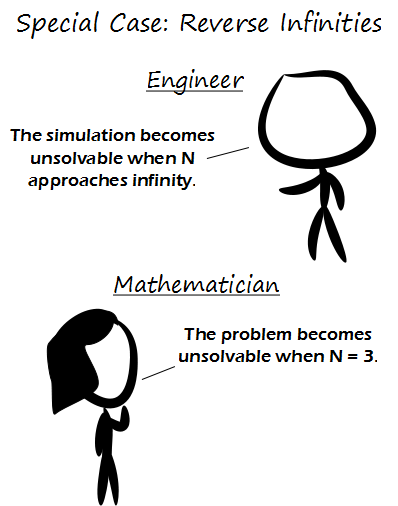

Comic JK 794
When I Feel Like It
⇤
<
?
>
⇥

⇤
<
?
>
⇥
Forum
.
RSS
.
Digg
.
Facebook
.
Reddit
.
Twitter
.
Stumbleupon
Enter your thoughts on number 794 here. Please, no spamming, trolling, or phreaking. The problem becomes unsolvable when it's bigger than your mother. Why are negative masses attracted to positive masses, yet positive masses repelled from negative ones? [A: Lack of understanding] Also, fun game: create some negative masses that repel each other, then put a large mass in the centre and watch the negative masses whiz past! <-21 bug is fixed. Missed an 'else.'> >Another fun game: make a big mass and try to get little masses to make stable circular orbits around it. Harder than it looks since you will usually get an ellipse. >>It's easy. Use z for first mass (host planet) and 1 for 2nd (moon). Position planet in the middle and the moon halway to the top with a med amount of tangential v. I am not sure if the net movement to direction of initial v is reality or not, but momentum would be conserved I guess. And by the way, ellipses are stable enough for our solar system to have existed for 4.5 billion years. And why does it not work with Opera or IE9? You gay or something? >The eternal web developer rule: Regardless how many browsers you support, there will always be at least one which does not work - and the users will flame you to infinity. btw: I'm also using Opera - so fix it!!111 ;-) >> Why cares about the group of fanatics, crazies, and ultra-naive who actually use Opera or IE9? It's way more fun to intentionally NOT support such browsers. >>> Agreed >>>Agreed >>The other eternal web developer rule: if you are attracted to members of the other sex, then your work will not support Opera or IE9. >>>>It works in K-Meleon, so it ought to work on Opera. Maybe it's just new versions of Opera that have a problem... >>>>>No problems in Opera here, though I'm a minor version behind... >>>>>>I'm up-to-date with Opera, and it's working fine here. Maybe it's just the users it hates? Please add "height: 100%;" to the end of the body's style attribute. Otherwise the clickable area is only as tall as the text paragraph (tested in Firefox 10). <Done> Hmm, pressing the 0 key (mass 0) seems to create a singularity in the top left corner. Heh, while trying to create a binary star system with planets (2 big masses and a collection of tiny masses, I managed to collapse my solar system excepting one planet which was ejected to about 1000 times the radius of that solar system. It then came back, of course - in absence of extra-solar bodies, everything comes back, eventually. Lesson: adding stars to already unstable solar systems is a very bad idea. >well, if everything comes back eventually, then if you treat the universe as one big solar system, there would be no "extra-solar" bodies and we would inevitably collapse. As this is still being debated, I'd say your statement is dubious. Yeah, the the gravity thing is pretty cool. Although it is annoying when masses leave the top or left of the screen, since you can't scroll over to see them.